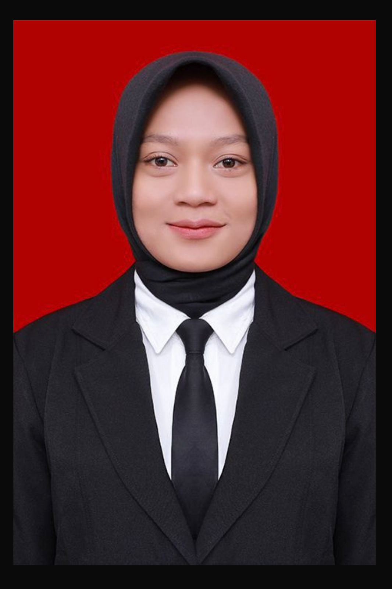

Sella
Salsadila Agustin, S.Pd.
Mahasiswi PPG Prajabatan PJOK UNNES 2026
Lahir dan tumbuh di Kabupaten Kebumen, daerah yang dikenal sebagai "Kota Walet"—simbol keuletan dan daya tahan tinggi. Karakter itu menanamkan disiplin dalam diri saya, serupa ketangkasan burung walet yang mampu terbang jauh dan bertahan dalam berbagai kondisi. Kini, saya berdedikasi menciptakan ruang gerak inklusif bagi generasi masa depan melalui integrasi sport science dan pedagogi modern.

Keyakinan yang Menggerakkan
"Tubuh yang sehat adalah rumah bagi jiwa yang kuat." Prinsip inilah yang menjadi fondasi setiap langkah saya sebagai calon pendidik PJOK.
Pembentukan Karakter
Saya memandang lapangan sebagai ruang terbaik untuk menanamkan sportivitas, kerjasama tim, dan kerja keras. Setiap keringat adalah pelajaran tentang integritas dan saling menghargai.
Bangkit dari Kegagalan
Seperti filosofi burung walet yang terbang melawan angin, saya percaya pendidikan olahraga sejati adalah tentang mengajarkan siswa cara bangkit setelah terjatuh, dan menjadikan setiap kekalahan sebagai guru terbaik.
Ruang Gerak Menyenangkan
Saya berkomitmen mengasah metode pengajaran inovatif agar ruang olahraga menjadi tempat yang dinanti siswa—tempat mereka bebas berproses, bergerak, dan berkembang, baik secara fisik maupun mental.
"Olahraga tidak hanya membentuk karakter, ia mengungkapkannya."
Jejak Akademik
Transformasi keilmuan dan praktik lapangan menjadi pendidik PJOK profesional yang adaptif dan inovatif.
Universitas Negeri Semarang
PPG Prajabatan PJOK
Mengembangkan modul ajar SMK menggunakan model Project-Based Learning (PjBL) dan mengintegrasikan prinsip Growth Mindset untuk menciptakan ekosistem pembelajaran digital yang bermakna.
Universitas Negeri Semarang
S1 Pendidikan Kepelatihan Olahraga
Mendalami teori dan praktik kepelatihan olahraga, fisiologi, biomekanika, serta merancang program latihan berbasis periodisasi untuk berbagai cabang olahraga.
SMA Negeri 2 Kebumen
Ilmu Pengetahuan Alam (IPA)
Mengikuti program peminatan IPA dengan fokus pada biologi dan fisika, membangun pola pikir ilmiah yang mendukung pemahaman tentang tubuh manusia dan gerak.
Pilar Kompetensi
Kapabilitas yang saya bangun dari perpaduan disiplin atlet, ilmu kepelatihan, dan semangat mendidik—untuk menghadirkan PJOK yang membumi dan membentuk karakter.
Inovasi Pembelajaran Aktif
Merancang modifikasi permainan dan skenario latihan yang menyesuaikan keterbatasan sarana, agar setiap siswa—tanpa terkecuali—bisa bergerak gembira dan meraih capaian bermakna.
Sport Science & Kebugaran
Bekal ilmu fisiologi, biomekanika, dan periodisasi latihan dari Pendidikan Kepelatihan Olahraga untuk menyusun program kebugaran terukur serta penanganan cedera dasar di lapangan (P3K).
Pembinaan Mental Juara
Berpengalaman mengelola turnamen dan event olahraga antar kelas, sekaligus mengajarkan sportivitas, kerja sama tim, dan terutama cara bangkit dari kekalahan sebagai bekal kehidupan.
Sisi Lain Kehidupan
Rutinitas penyeimbang energi dan kesehatan mental di luar ruang kelas.